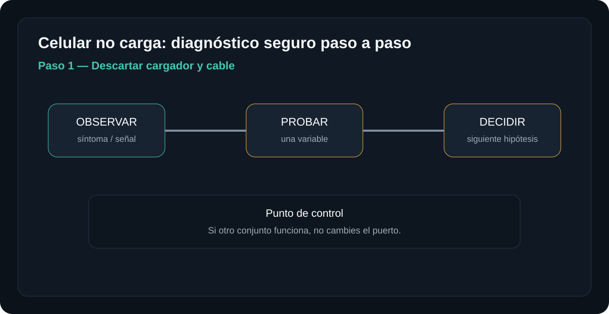
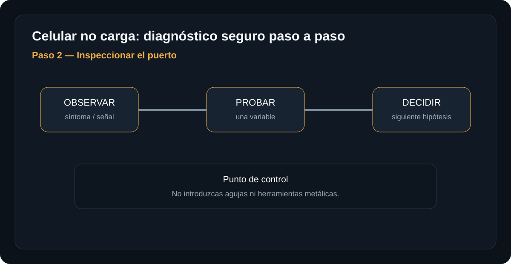
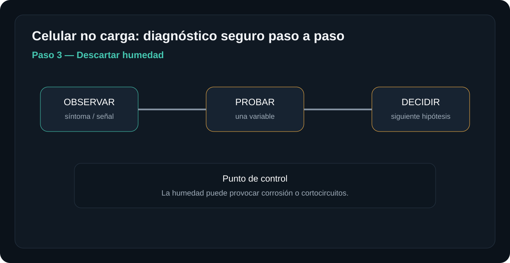
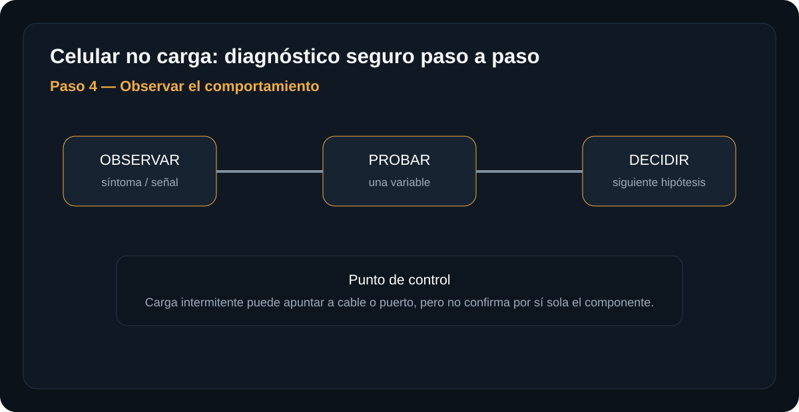
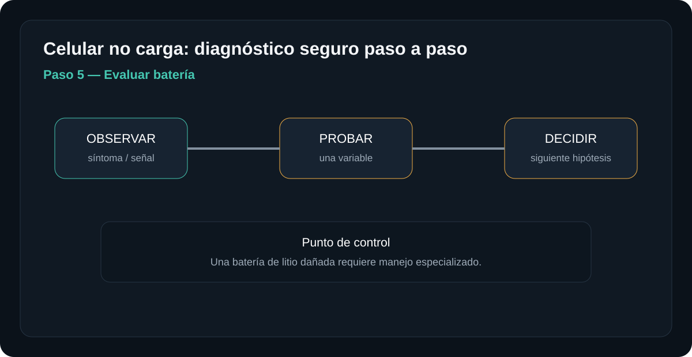

Introducción

La meta es llegar a una hipótesis con evidencia. No se trata de desmontar por desmontar: cada paso elimina una causa posible y prepara el siguiente.
Antes de empezar: seguridad
Retira alimentación y periféricos antes de abrir. No trabajes con una fuente de red abierta ni realices mediciones energizadas si no tienes formación e instrumental apropiados.
- Trabaja sobre una superficie limpia, seca y bien iluminada.
- Organiza tornillos y conectores por etapa.
- Fotografía conexiones antes de desconectarlas cuando desmontes.
- No fuerces una cubierta: una resistencia inesperada suele indicar una fijación pendiente.
Herramientas y material
Diagnóstico paso a paso
Descartar cargador y cable
Prueba otro cargador y cable conocidos. Evita cargadores dañados o cables con conectores flojos.

Qué hacer
- Lee el síntoma completo antes de desmontar.
- Realiza una sola prueba y anota el resultado.
- Si el resultado no coincide, vuelve al paso anterior y no sustituyas piezas todavía.
Si otro conjunto funciona, no cambies el puerto.
Resultado esperadoSi la prueba es correcta, continúa. Si no lo es, conserva el resultado y sigue la rama de diagnóstico correspondiente.
Inspeccionar el puerto
Con el teléfono apagado y buena iluminación, busca pelusa, corrosión o daño mecánico.

Qué hacer
- Lee el síntoma completo antes de desmontar.
- Realiza una sola prueba y anota el resultado.
- Si el resultado no coincide, vuelve al paso anterior y no sustituyas piezas todavía.
No introduzcas agujas ni herramientas metálicas.
Resultado esperadoSi la prueba es correcta, continúa. Si no lo es, conserva el resultado y sigue la rama de diagnóstico correspondiente.
Descartar humedad
Si el equipo detecta humedad o estuvo expuesto a líquido, no fuerces la carga. Déjalo fuera de fuentes de calor y sigue las recomendaciones del fabricante.

Qué hacer
- Lee el síntoma completo antes de desmontar.
- Realiza una sola prueba y anota el resultado.
- Si el resultado no coincide, vuelve al paso anterior y no sustituyas piezas todavía.
La humedad puede provocar corrosión o cortocircuitos.
Resultado esperadoSi la prueba es correcta, continúa. Si no lo es, conserva el resultado y sigue la rama de diagnóstico correspondiente.
Observar el comportamiento
Comprueba si aparece el icono de carga, si carga intermitentemente o si solo funciona en una posición.

Qué hacer
- Lee el síntoma completo antes de desmontar.
- Realiza una sola prueba y anota el resultado.
- Si el resultado no coincide, vuelve al paso anterior y no sustituyas piezas todavía.
Carga intermitente puede apuntar a cable o puerto, pero no confirma por sí sola el componente.
Resultado esperadoSi la prueba es correcta, continúa. Si no lo es, conserva el resultado y sigue la rama de diagnóstico correspondiente.
Evaluar batería
Si el teléfono se apaga inmediatamente, se hincha o se calienta anormalmente, detén la carga.

Qué hacer
- Lee el síntoma completo antes de desmontar.
- Realiza una sola prueba y anota el resultado.
- Si el resultado no coincide, vuelve al paso anterior y no sustituyas piezas todavía.
Una batería de litio dañada requiere manejo especializado.
Resultado esperadoSi la prueba es correcta, continúa. Si no lo es, conserva el resultado y sigue la rama de diagnóstico correspondiente.
Una prueba negativa no es un fracaso: es información. Registra qué se probó, con qué pieza o condición y qué cambió. Evita reemplazar varios componentes al mismo tiempo.
Tabla rápida de diagnóstico
| Síntoma | Primera comprobación | Siguiente hipótesis |
|---|---|---|
| Carga con otro cable | Cable original falla | Prioridad: cable |
| No carga con ninguno | Puerto limpio | Prioridad: puerto/batería/placa |
| Batería hinchada | Cambio de forma | Detener uso y derivar |
Fuentes, licencias y referencias
- Fuente de imagen / referencia — revisa la licencia indicada en la ficha antes de redistribuir.
- Creative Commons BY-SA 4.0 cuando aplique a la imagen.
- iFixit / documentación de reparación como referencia técnica para PlayStation cuando corresponda.